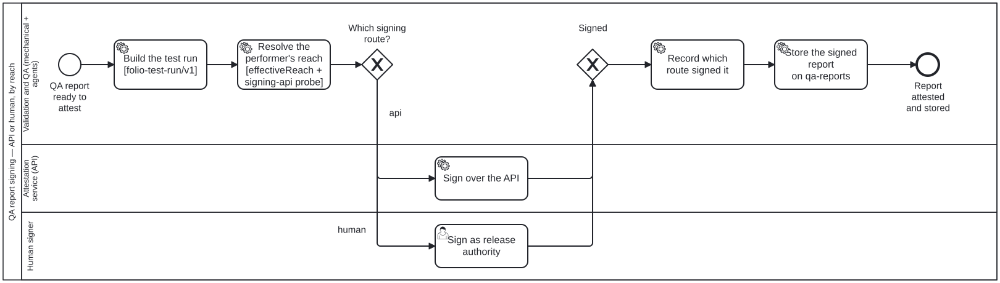

Generated from
cat-harness/skills/sdlc/sdlc-core/qa-report-signing.md— do not edit here.
QA report signing — two routes, chosen by the performer’s reach
A QA report becomes evidence when a third party can establish what was
measured and who vouches for it. folio-test-run/v1 (schemas/sdlc/test-run.ts)
answers the first: a data hash and a process hash, each all-or-nothing, plus
the skill it tests, whose contract its recorded cases are checked against
(test-run-conforms, #1168). This
skill answers the second, and it has two routes because the participant
doing the signing may not be able to reach anything.
From the owner, 2026-09-20 on #363:
some of the machine actors may be air-gapped, it is a property of an actor. depending on the propeorty, different tools might not work. in this case an API wouldnt wokr and a human actor is needed. so process for signing needs two parallel routes/processes, air gapped vs not, the first needed a human actor
The subject is the QA report — owner, same day, answering what gets signed.
The process is executable — do not hand-roll the branch
processes/sdlc/qa-report-signing.bpmn, with the branch computed by
decisions/signing-route.dmn. Run it with workflow_start /
workflow_next / workflow_complete like every other diagram here. The
gateway refuses a hand-supplied outcome, which is the point: the route
is a consequence of declared facts, not a preference.
Reach is a property of the ACTOR, and unknown is a third state
schemas/actor-reach.ts. Three things worth holding in mind:
- One vocabulary, two levels. An actor’s
reachuses the same scale as the deployment’snetwork(folio-assistant-g7vb) —internet,egress-restricted,air-gapped. There is no second scale, because two spellings of one fact is the failure this repository keeps paying for. - Composition is asymmetric. An air-gapped deployment forces every actor
air-gapped. A connected one forces nothing — a connected site may hold an
isolated signing host, which is precisely the case raised. So an actor
that declares no reach inside a connected deployment is
unknown, notinternet. unknownroutes to the human. A gateway that read could-not-determine as “use the API” would fail closed on the wire and open in the record: the call fails and what survives is an unsigned report that nothing marks as unsigned. Same rule asci-health— could-not-check is never green.
Why there is no network-egress capability
The bean (folio-assistant-r0rq) proposed one, reasoning that
CapabilityDefinition.requires already propagates dependencies and an
air-gapped actor would simply not carry it. That reasoning is sound about
requires, and it was not taken, for a reason that only became clear
once reach was written down:
A capability is an environment probe —
detection: { method: "command", … }, a thing you run to find out. Reach is an architectural fact, declared by whoever built the site.
Making egress a probe asks the network a question the network is exactly
unable to answer on the machine that matters: on an air-gapped host a failed
probe is indistinguishable from an outage, and the safe reading of an outage
(“retry later”) is the unsafe reading of an air gap. Worse, the capability
would have carried the same fact as reach, in a second place, free to
disagree — bean ind9 is the fixed instance of putting non-probeable things
in capabilities[], and this would have reopened it.
What is a probe is whether an endpoint is configured: signing-api, an
env-var detection. The DMN table reads both, because they answer
different questions — can this host call out and is there anything to
call. A configured endpoint on an air-gapped host is still uncallable.
Declaration and execution are different mechanisms
qa-report-signing.ts declares:
requiredCapabilities: [
{ capabilityId: "signing-api", degradation: "fallback",
fallbackRole: "publication-manager" },
],
fallbackRole (bean folio-assistant-85e8) says which lane takes over
when no capability can do it. It does not route anything, and the first
measurement of that was too generous: this said the only reader was
scripts/generate-docs.ts, “which renders it”. Re-measured 2026-09-20 —
nothing invokes that script, it is in no package.json entry and no
workflow, and its output directory schemas/generated/ does not exist. So
the degradation model has zero effective readers, not one. The gateway is
what executes. (folio-assistant-3lbz, and
cat-harness/docs/proposals/zod-schemas-as-tools.md.)
Both are worth having, and they must agree — the declaration is what a
reader, a generated doc and check:fallback-roles can see without executing
anything; the gateway is what happens. Where they disagree, the diagram is
what ran, and the declaration is the bug.
Recording the attestation
Record which route signed it, not only that it is signed. A reader who cannot tell an API signature from a human one cannot tell which trust assumption they are relying on — and the two are not interchangeable: one attests that a service with a key saw these hashes, the other that a person holding release authority did.
Where the signed report goes: the qa-reports branch, next to its run
A QA report is a derived record — it can be rebuilt from the tree and the
data it hashed — so since arc 3fva it is kept where every derived QA result
is kept: the orphan qa-reports branch, in the entry keyed by the commit
it judged (main/<sha>/ or pr/<n>/<sha>/), written through
scripts/qa-store.ts and never by a hand git push. The signature and the
route that produced it travel with the report, in the same entry, because
a signature separated from the bytes it covers attests nothing a reader can
check. Task_RecordAttestation in qa-report-signing.bpmn ends there.
What does not go there. A certification — an accountable role’s
Decision taken on a test report’s rollup — is a separate node, and it stays
on main beside the attestations (owner decision D5, default (a)): it is a
judgement, the same class as test/attestations/, and no regeneration can
reproduce it. That decision belongs to the test-plan process, which calls
this one to sign; this skill only signs.
A read of a signed report follows the store’s rules: a miss is never read as “unsigned and fine”, and a store that cannot answer is UNKNOWN, which routes like unknown reach — to a person, never to a pass.
Processes that run this skill
This skill has its own process: QA report signing.

| process | step(s) that name it |
|---|---|
| QA report signing | Build the test run [folio-test-run/v1]; Resolve the performer’s reach [effectiveReach + signing-api probe]; Sign over the API; Sign as release authority; Record which route signed it |
| Test-plan execution | Sign the certification (calls a sub-process) |